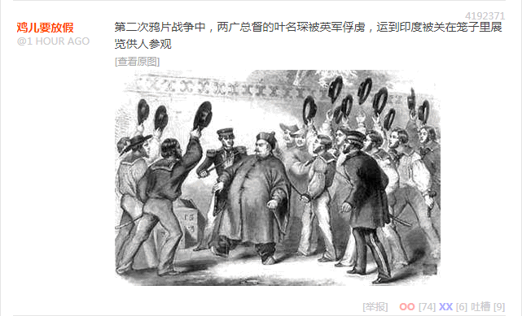
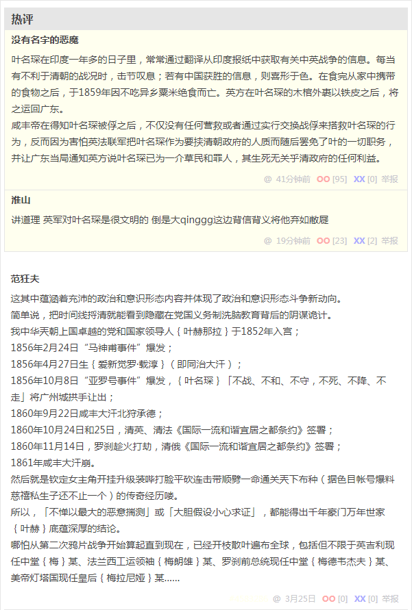

无聊图 4192371
第二次鸦片战争中，两广总督的叶名琛被英军俘虏，运到印度被关在笼子里展览供人参观
叶名琛在印度一年多的日子里，常常通过翻译从印度报纸中获取有关中英战争的信息。每当有不利于清朝的战况时，击节叹息；若有中国获胜的信息，则喜形于色。在食完从家中携带的食物之后，于1859年因不吃异乡粟米绝食而亡。英方在叶名琛的木棺外裹以铁皮之后，将之运回广东。
咸丰帝在得知叶名琛被俘之后，不仅没有任何营救或者通过实行交换战俘来搭救叶名琛的行为，反而因为害怕英法联军把叶名琛作为要挟清朝政府的人质而随后罢免了叶的一切职务，并让广东当局通知英方说叶名琛已为一介草民和罪人，其生死无关乎清政府的任何利益。
讲道理 英军对叶名琛是很文明的 倒是大qinggg这边背信背义将他弃如敝屣
这其中蕴涵着充沛的政治和意识形态内容并体现了政治和意识形态斗争新动向。
简单说，把时间线捋清就能看到隐藏在党国义务制洗脑教育背后的阴谋诡计。
1852年，我中华兲朝上国卓越的党和国家领导人叶赫那拉入宫；
1856年2月24日，妖言惑众“马神甫”及其粉丝被依法判处死刑立即执行；
1856年4月27日，兲降伟人爱新觉罗·载淳（即同治汗）；
1856年10月8日，“亚罗号事件”爆发，叶名琛「不战不和不守不死不降不走」将广州拱手让出；
1860年9月22日，咸丰汗北狩承德；
1860年10月24日和25日，清英、清法《国际一流和谐宜居之都条约》签署；
1860年11月14日，罗刹趁火打劫，清俄《国际一流和谐宜居之都条约》签署；
1861年咸丰汗崩。
然后就是钦定女主角开挂升级装哔打脸平砍连击带顺劈一命通关兲下布种（据色目帐号爆料慈禧私生子还不止一个）的传奇经历喽。
所以，「不惮以最大的恶意揣测」或「大胆假设小心求证」，都能得出千年豪门万年世家叶赫底蕴深厚的结论。
哪怕从第二次鸦片战争开始算起直到现在，已经开枝散叶遍布全球，包括但不限于英吉利现任中堂梅某、法兰西工运领袖梅朗雄某、罗刹前总统现任中堂梅德韦杰夫某、美帝灯塔国现任皇后梅拉尼娅某……
补充
注意现在色目帐号提供素材的时间点，还只涉及了应景正在脱欧的英吉利相关内容，而法兰西炮制的「马阿訇事件」还没爆发呢，就看九省通衢活跃色目帐号得意忘形肆无忌惮的表现，就可以用九省通衢の煎蛋的术语形容为「快了」。
我中华兲朝上国全票冻蒜人民领袖正在法兰西和妈控大统领探讨境内大批马某马某某为非作歹相关事宜，包括但不限于活跃在新时代中国特色社会主义大好形势下繁荣的中文互联网上的一票钦定文豪野生国师意见领袖指路明灯。
太阳底下没有新鲜事，一切历史都是当代史，按照爆料的色目帐号判断，很快「四川总督」彭清华「不战不和不守不死不降不走」就要被美军捉去运往波多黎各关在笼子里展览供人参观了，当然「鸡儿要放假」喽。
接下来兲朝就该与美帝灯塔国彭斯副元首、彭佩奥国务卿，以及下任大统领彭博一起探讨「第三次鸦片战争」相关事宜了也，估计《九省通衢条约》初稿已经成型。
正所谓「好巧不巧」，与叶名琛一样，彭清华也是湖北人，只不过不在九省通衢，惟楚有才嘛，「俺也一样」，九头鸟几个脑袋之间客气个啥吖。